All results · Current replay
Earlier reference study: 1% tolerance
Historical implementation. These runs used the earlier finite candidate library. They are preserved evidence, not validation of the current MPPI controller.
Original per-method outcomes, safety statistics and figures.
Figures
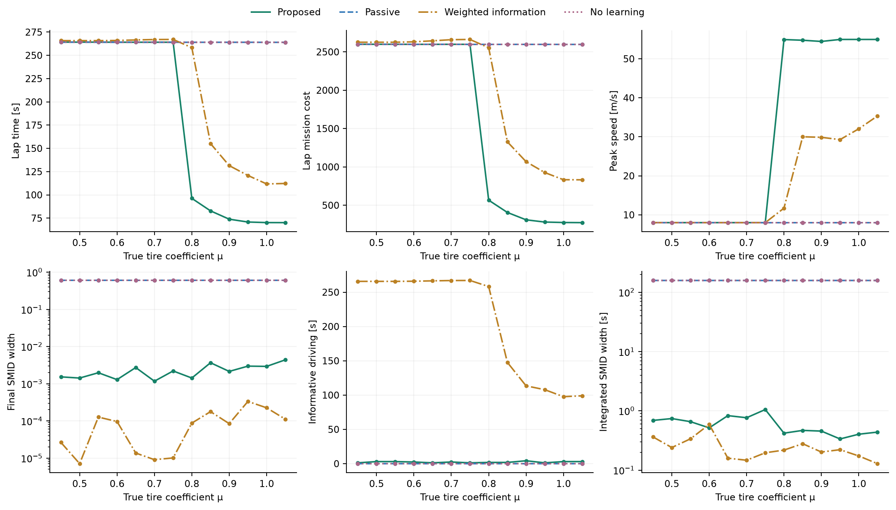
01 friction sweep · PNG · PDF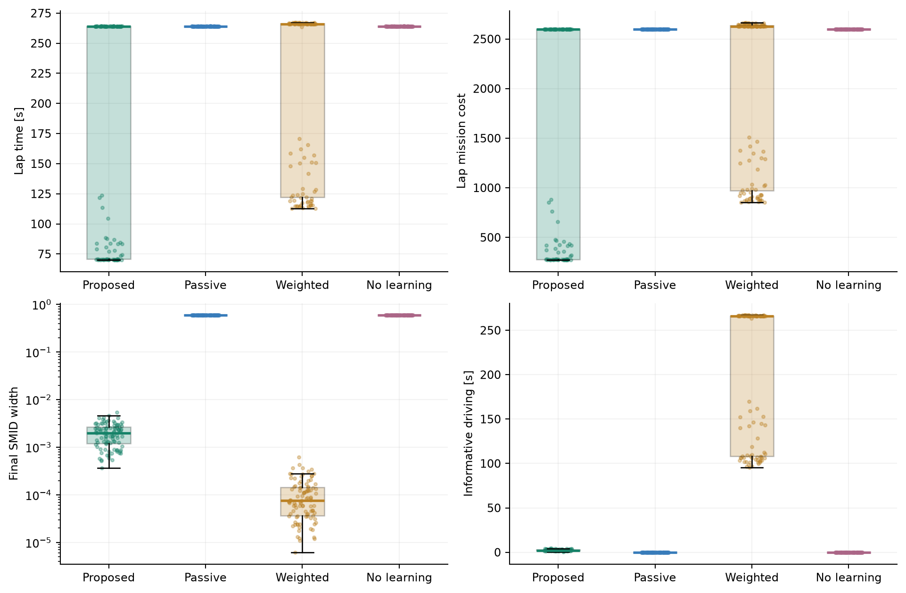
02 monte carlo distributions · PNG · PDF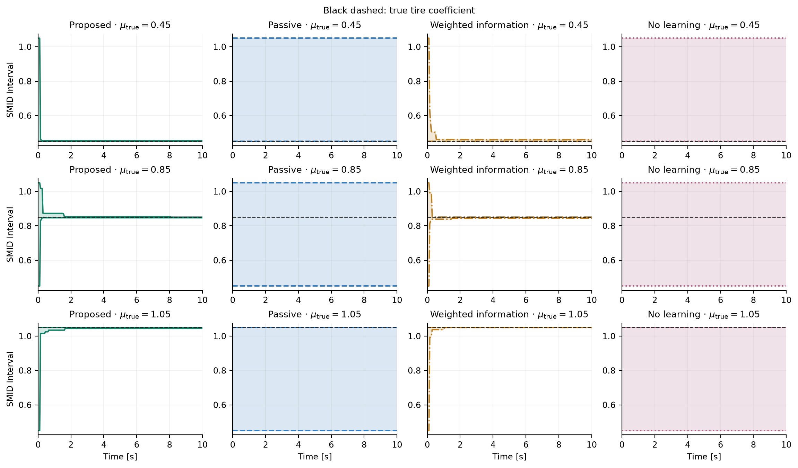
03 smid bounds truth · PNG · PDF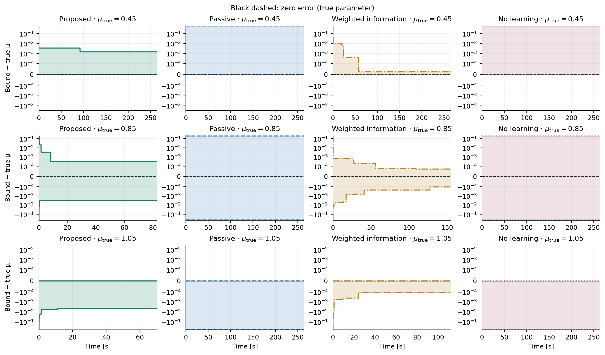
04 smid error bounds · PNG · PDF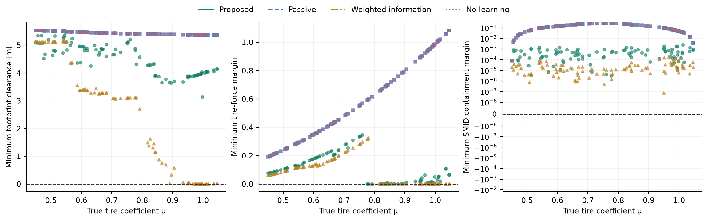
05 safety and containment · PNG · PDF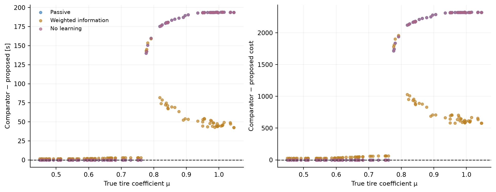
06 paired improvement · PNG · PDF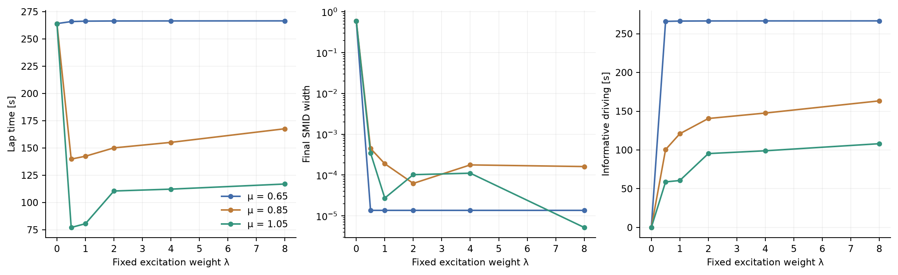
07 weight sensitivity · PNG · PDF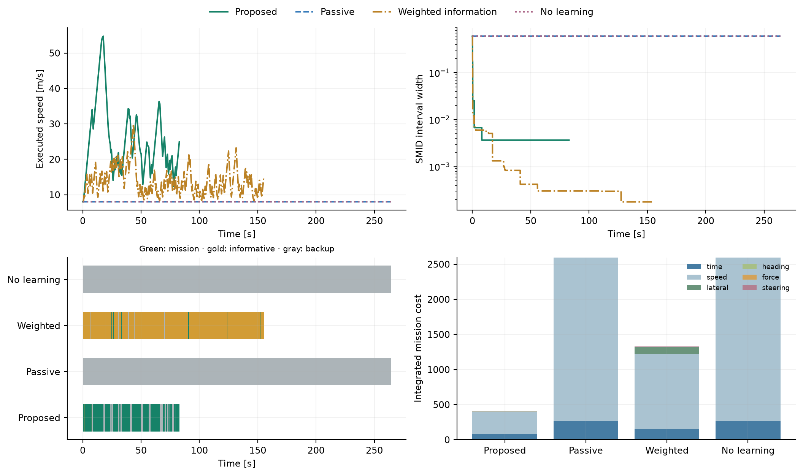
08 mechanism and cost · PNG · PDF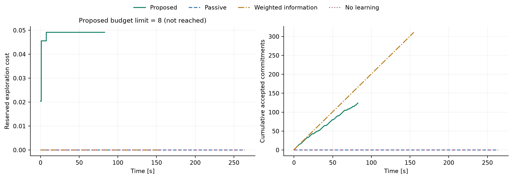
09 budget and commitments · PNG · PDF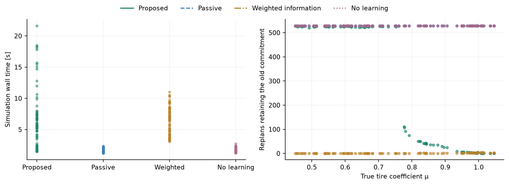
10 runtime and retention · PNG · PDF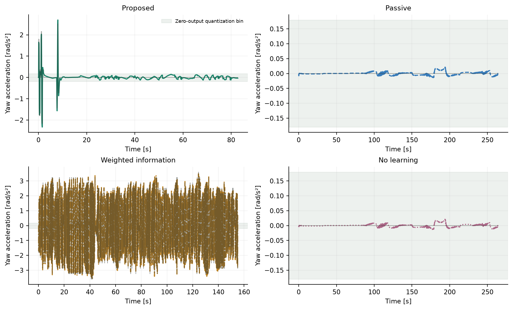
11 sensor excitation · PNG · PDF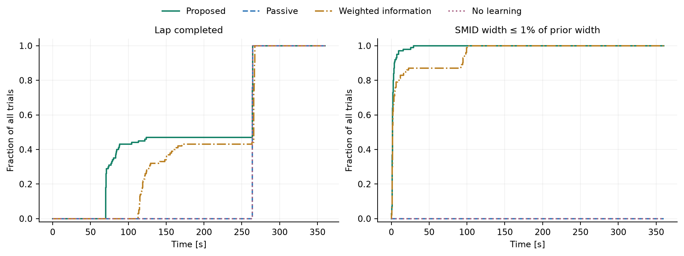
12 completion and identification · PNG · PDF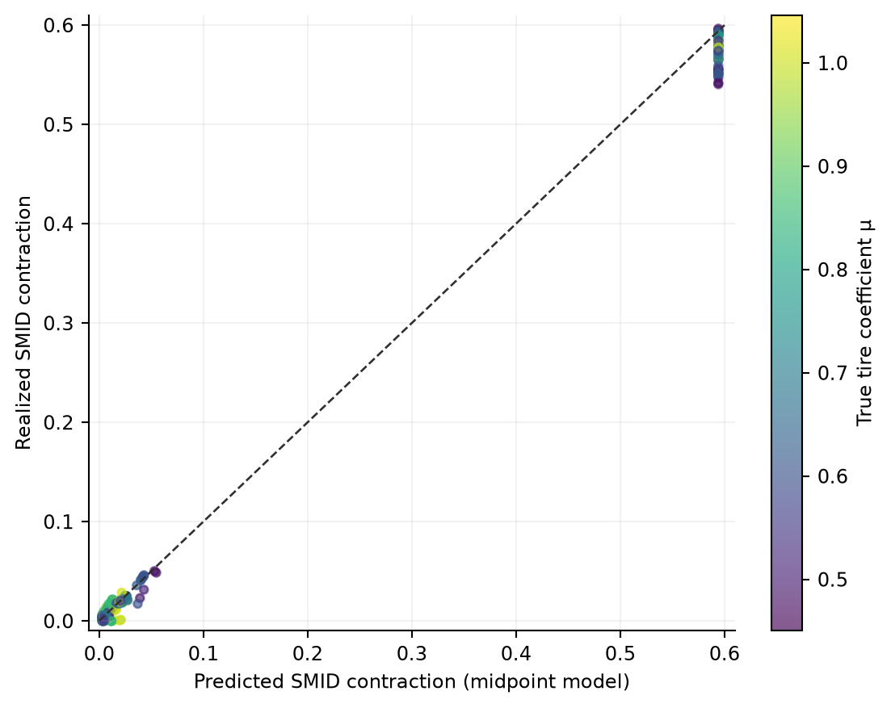
13 information prediction · PNG · PDF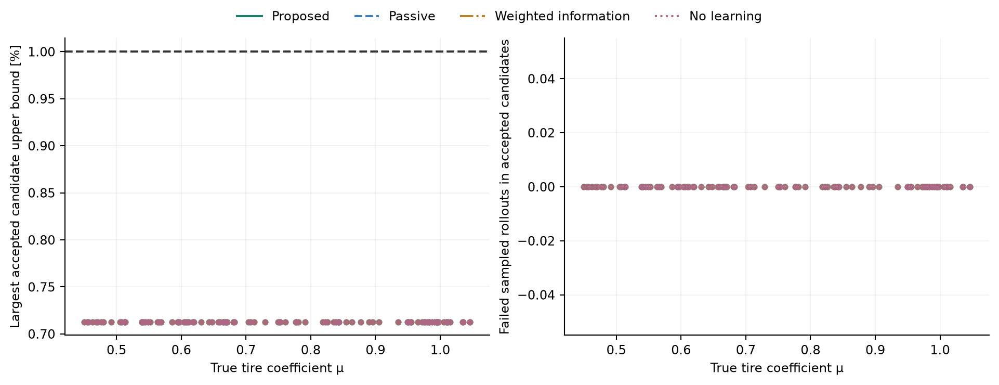
14 candidate certificates · PNG · PDF